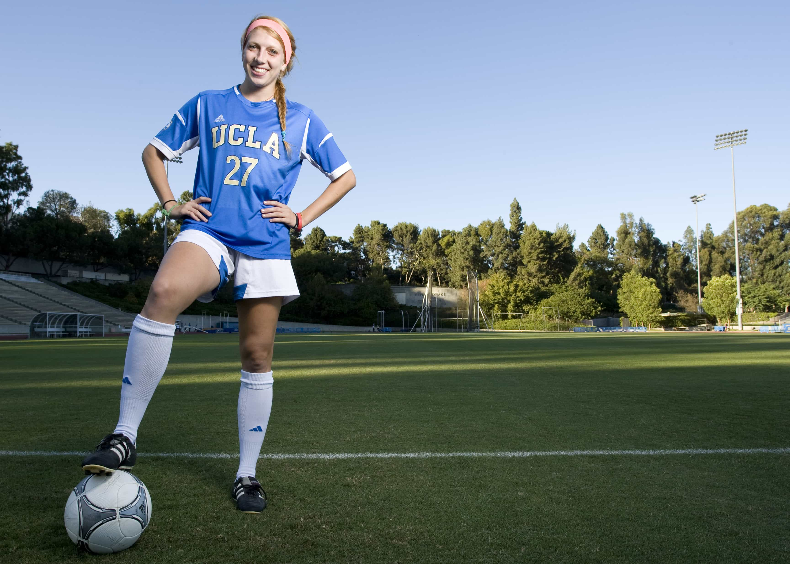

< < < Back
The Women’s Soccer World Cup Is A Celebration Of Mediocrity – Return Of Kings
A number of media outlets and pressure groups, especially the British taxpayer-funded BBC, have for years insisted on “equality” between men’s and women’s soccer (known as football in Britain and continental Europe). They either raise the demand explicitly or give incessant airtime to those demanding it.
This histrionic call has only grown with the start of the Women’s Soccer World Cup in Canada this month. The LA Times and others are now joining the fray. Despite incontrovertible evidence that most international female players, those representing their countries, would struggle to make a fourth or fifth-string men’s domestic league team, the political powers that be have attacked the “sexism” of soccer and screamed for equal attention for each set of gendered fields.
Presumably, if equal attention, or something close, is achieved, feminists will rally for female soccer players, inferior to the more skilful and athletic men, to be given the same multimillion-dollar, pound, and Euro salaries. All without ever actually playing or competing with the better men. All hail the “equality” New World Order of the BBC and Co.

If it’s about equality, feminism and girl power, have the women play the men!
If advocates for women’s soccer want equality, they can play the men. As I pointed out in an article at the start of this year about the pure lunacy of equal pay in tennis, where men and women compete separately, we don’t start separate basketball leagues for those under six feet tall with similar salaries as the normal NBA.
We also don’t see two different, equally supported Super Bowls staged every year, one for mesomorphs and endomorphs, and another for ectomorphs, where super lean linebackers might be half the weight of regular NFL quarterbacks.
Of course, given the biological differences between men and women, women should be able to have their own sporting tournaments and leagues. We do the same thing for juniors, masters (those typically 40 and above) and the disabled. But they, like women, should not expect to be lauded to anywhere near the same degree as the regular male players and men’s teams, pretending they’re equal in ability, competitiveness or the overall spectacle they provide.
Admire female athletes, but they’re simply not as good as men

Give me the name of one female player who should be allowed to even carry Lionel Messi’s shoes, if 99.99999% of men would never deserve the honor.
When I’ve included “celebration of mediocrity” in the title of this piece, it’s important to add a caveat. These women are good. They train day-in, day-out and have for years. Take most women (and men) off the street and they would be beaten by these women, hands-down. So, on the one hand, they have a skill that few, male or female, possess.
But on the other hand, to try and compare them to male professional or semi-professional players, even those men who never make world-class national or club sides, makes a mockery of the term “equality” and “professional.” This is the point at which celebrating women’s soccer as “equal” becomes unadulterated mediocrity.
Should we encourage women’s sport? Of course! And as ROK has proven time and time again, women’s health and counteracting the deliberate, self-chosen plague of obesity are concepts that feminism and many aspects of the modern world have worked tirelessly against.
If a women works hard to perfect herself, to the extent of her physical ability, in her sport, all power to her. Irrespective of the field in which someone toils, we can all draw inspiration from the person who pursues their dream or follows their career or hobby in a way that supremely challenges their perceived limits.
This is not a matter of saying men will beat women at sport each and every time. It is about a realistic assessment of the general abilities of male versus female athletes. And those abilities directly relate to what they should be praised for and paid.
The US Women’s National Soccer Team lost to the Under 17’s US Boys’ Team 2-8
I kid you not. They did lose 2-8 in a scrimmage. Admittedly an unofficial match, it shows you that even pre-adult males will typically whip females in the prime of their soccer-playing life.
The interesting part about the Under 17’s Boys’ Team is that many of those players never make the jump to their senior national men’s team. Junior Flores, the U17’s US international player who reported the 8-2 win over the senior women’s national team, currently plays for Borussia Dortmund II, the reserve side for Borussia Dortmund, for example.
Although still very young, his chances of ever making the national side proper seem precarious at best. Yet he was still part of a team that demolished a playing group that supposedly deserves equal status with the US Men’s National Team.
If this story had been proven, dramatically, to be false, the general reality would remain the same. Women and men are pooled into separate fields and leagues to allow women to have a chance to compete at the highest level, albeit a “level” manipulated so that they can be there in the first place, without being upstaged almost universally by the professional male players.
If you want equality, feminists, stop butchering the term

Tell us again, why does it deserve equality?
The world will never be full of people with equal ability. And there should be, nevertheless, a benchmark of reward and support for those whom nature, upbringing or the general environment have not endowed with the physical, cognitive, or additional blessings of others. This is why we have the minimum wage, assistance for the disabled, elderly and sick, and the aspiration of what should be a moderate welfare state and social safety net.
To argue that women deserve equal standing in the world of sport, and in terms of remuneration in particular, makes a comedic spectacle when compared to the many other disparate fields in which we have no problem rewarding those with greater ability more. Men deserve significantly higher salaries and greater attention in soccer simply because they’re significantly better than women. End of story.
Much of the support for women’s soccer at the moment depends on the erroneous belief that they are somehow showcasing skill equal to men. If that’s the case, I deserve an Oscar for telling my parents or grandparents that I’m on a business trip overseas instead of sleeping around in Paris or Berlin. Move over, Daniel Day-Lewis.
If you want equality, my feminist inclined friends, how about not flaying the concept until it’s nothing but bones and a rancid smell?
Read More: 4 Reasons Why Americans Will Never Fully Embrace Soccer